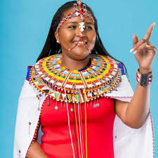
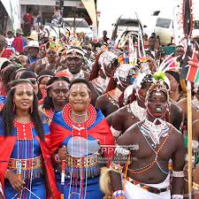
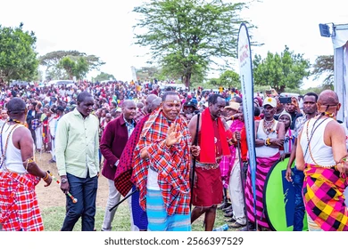

The Manyatta Festival is a vibrant celebration of Samburu’s culture, peace, unity, and development. Held annually, the festival brings together communities to promote cultural pride, economic empowerment, and sustainable development through arts, dialogue, and collaboration.
Vision & Mission
VISION: A peaceful and empowered Samburu society united through culture and innovation.
MISSION: To promote cultural identity, peacebuilding, and sustainable development by empowering youth, women, and communities through festivals, storytelling, and creative arts.
Our Objectives
Promote peace and harmony across communities.
Empower youth and women through cultural platforms.
Preserve and showcase Samburu heritage and traditions.
Encourage innovation and creativity through local arts.
Our Story
The Manyatta Festival began as a grassroots initiative aimed at transforming communities through celebration and dialogue. Inspired by the strength of Samburu traditions, the festival has grown into a county-wide event recognized for peacebuilding and youth empowerment.
Cultural Significance
The festival provides a unique opportunity to honor Samburu’s cultural wealth, traditional knowledge, and community values. It serves as a bridge between generations, fostering respect, identity, and mutual understanding.
Festival Leaders & Community Champs
H.E. Lati Lelelit
As the Governor of Samburu County, his support for cultural development and peacebuilding has been instrumental in shaping the vision of the Manyatta Festival.

Hon. Naisula Lesuuda
Member of Parliament for Samburu West, Hon. Lesuuda is a champion for women and youth empowerment, and a vocal advocate for cultural preservation.

Samburu Youths
The energy and creativity of Samburu’s youth are at the heart of this festival. They bring innovation, talent, and a spirit of unity to every event.

Community at Large
The Manyatta Festival is a celebration by the people, for the people. It thrives on the participation and enthusiasm of local communities across the county.
Get Involved
Whether you're an artist, volunteer, sponsor, or supporter, your contribution helps shape a vibrant and unified future for Samburu. Join us in celebrating culture, empowering youth, and fostering peace.